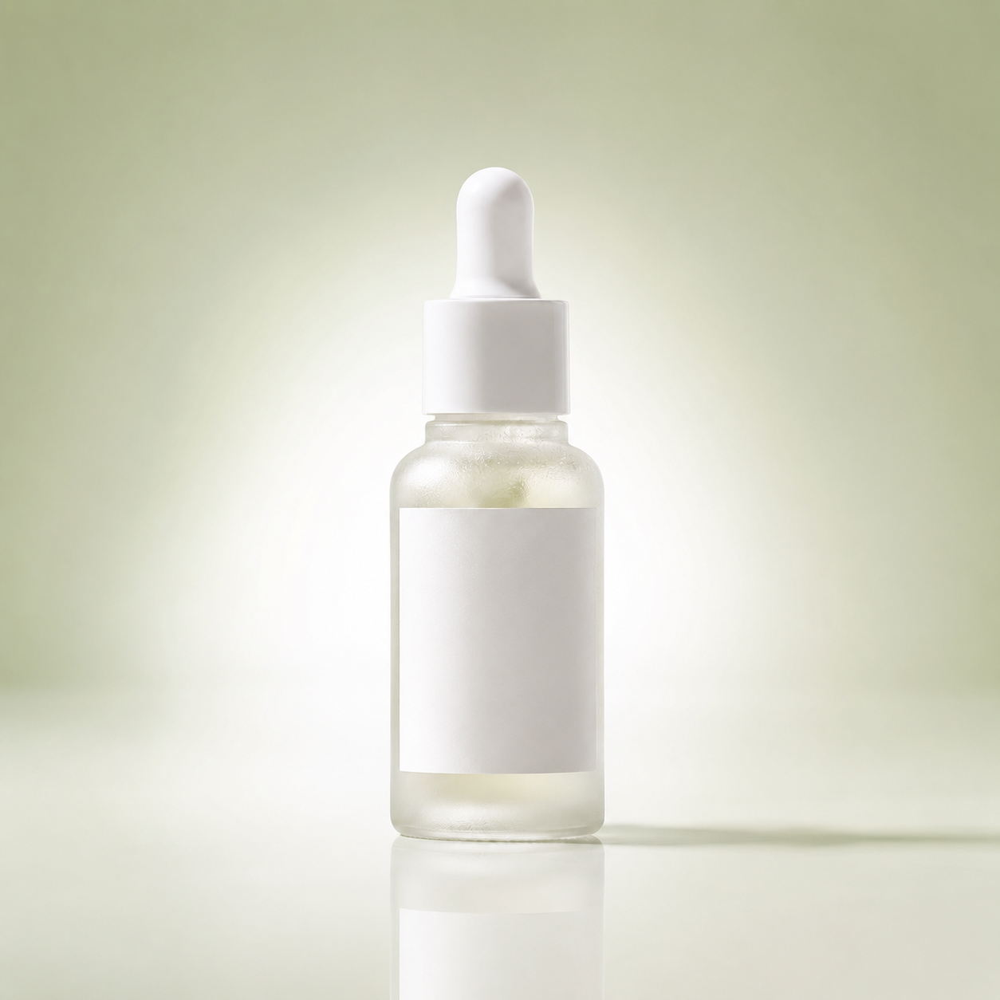

산출물 프로토 — HARUON CICA 앰플
S2(입점 후·매출 저조) 세그먼트의 30만 원 포함 실물 산출물 2종(상세페이지 1건 + 썸네일 1개) 프로토타입입니다. 검증 목표는 둘입니다. (1) 진단 파이프라인 산출물을 반자동 조립해 "돈값" 품질이 나오는가(Q4), (2) 크몽 2만원 저가 제작과 구별되는 "근거가 붙은 실물"이 눈에 보이는가(§5.3). 상세·썸네일의 각 핵심 요소에 재설계 근거 주석(약기법 K코드 회피 · 코퍼스 실측 · 페르소나 구매 반대이유 · USP 참조)을 토글로 붙였습니다. 제품: HARUON · CICA アンプル / skincare · 화장품 상정 / Qoo10·楽天 Japan.
이 산출물, 어디까지 자동으로 나왔나 (Q4 마진 판단용)
각 요소가 진단 산출물에서 그대로 조립됐는지, 진단값 + 디자이너 편집인지, 순수 수작업(레이아웃/이미지)인지 표기합니다. 반자동화 가능 비율을 판단해 30만 트라이얼의 지속가능성(건당 한계비용)을 가늠하기 위한 로그입니다.
| 산출물 요소 | 출처(재사용) | 생산 방식 |
|---|---|---|
| 히어로 카피 「ゆらぎがちな肌…うるおいという選択を」 | report-sample 블록8-1 그대로 | 그대로 조립 |
| 문제 제기 블록 「こんな肌、心当たり…」 | report-sample 블록8-2 그대로 | 그대로 조립 |
| 성분 3종 기전 카피 (CICA/ナイアシンアミド/セラミド) | report-sample 블록8-3 그대로 | 그대로 조립 |
| 무첨가·敏感肌·パッチテスト·집계실적·CTA 카피 | report-sample 블록8-4·7 그대로 | 그대로 조립 |
| 근거 주석(K코드·코퍼스 라인·반대이유·USP) | 블록3 감사표 + 블록4 코퍼스 + 블록2 페르소나 | 조립+편집 |
| 배합률 ◯% · 집계 ◯月時点 · 송료 플레이스홀더 | 증거 원칙(미확인), 확인 후 기입 | 조립+편집 |
| 썸네일 소구 1줄 + 성분/무첨가 배지 | 블록8-1·§4-3 검색표기 조립 | 조립+편집 |
| 블록 순서·상세 레이아웃·디자인 토큰 | 일본 상세 관례 구조 + A안 토큰 | 수작업 |
| 제품 이미지·질감컷·씬컷 | 브랜드 제공 필요(현재 플레이스홀더) | 수작업 |
상세페이지 1건 (full · 세로 스크롤)
Qoo10·楽天 일본 뷰티 상세 관례 구조왼쪽은 고객에게 나가는 깨끗한 실물(모바일 상세), 오른쪽은 각 블록의 재설계 근거 주석(토글)입니다. 일본어를 못 읽는 대표가 검수할 수 있게 각 블록에 KR 역문을 병기했습니다.
ゆらぎがちな肌※1に、うるおいという選択を。
角層のすみずみ※2まで満たす、CICA(ツボクサエキス)アンプル。
※1 季節や乾燥によるコンディションの変化 ※2 角質層まで
재설계 근거·히어로 (K1·K2)
角層まで로 자기한정. 진정 단정 대신 공감(ゆらぎ肌)→약속(うるおい).line184 「肌荒れを防ぎながら」 프레임 · asta line164 「※角層」 각주 관례. 성분명 CICA(ツボクサエキス) 병기=검색표기(§4-3).こんな肌、心当たりありませんか？
季節の変わり目、マスク、寝不足——
肌がゆらいで、いつものスキンケアがなんだかしみる。
その多くは、肌の水分バランスが乱れているサインかもしれません。
だからHARUONは、"抑え込む"のではなく、うるおいで整えることから考えました。
재설계 근거·문제 제기 (신규 서사 축)
こんな経験していませんか？→原因→解決(patterns §2-b, 마키아레이베르) 이식.選び抜いた、3つの整肌成分。
- CICACICA(ツボクサエキス)ゆらぎがちな肌のキメを、うるおいで整える。
- B3ナイアシンアミド乾燥しがちな肌にうるおいを届け、ハリ感のある印象へ。
- Cerセラミドうるおいを抱え込み、乾燥に負けない肌をサポート。
※ ツボクサエキスを◯%配合(◯◯抽出物として) 〔확인 후 기입: 정확한 배합률·추출 부위〕
재설계 근거·성분·배합률 (K7)
◯%配合+부위 표기 + 성분별 기전형 서술로 교체.line1-3 グリシルグリシン 6%, 작아도 정확한 수치가 큰 숫자보다 신뢰. idio line184 CICA（ツボクサエキス） 병기.敏感肌の毎日に、無添加という安心。
※ 无添加の範囲は上記4項目を指します。〔확인 후 기입: 실제 처방 기준 프리 항목만 표기〕
재설계 근거·무첨가/프리 (신규 B군)
◯◯フリー를 이식. 단 프리 항목은 확인된 처방만(증거 원칙).フリー/無添加/無香料/パッチテスト 계열 54건 등장 · lexicon 無添加(80).재설계 근거·敏感肌·パッチテスト (K8·K9)
敏感肌の方へ(대상 표시)+パッチテスト済み+면책 각주로 안전화.敏感肌(172)·低刺激(50). 敏感肌 리뷰 최상위 확인 어휘.夜のスキンケアの仕上げに。
洗顔・化粧水のあと、手のひらに数滴。やさしくなじませて。
翌朝、しっとり満ちたようなキメ印象へ。
재설계 근거·사용 씬 (K10)
印象/感想 레벨로 완화. 사용 타이밍(밤) 소구는 유효하므로 유지.しっとり(90)·うるおい/潤い(54) 지속으로 체감(보습으로 판단). 기대-실제 갭 축소.◆ 効能評価試験済み（乾燥による小じわを目立たなくする） 〔시험 미실시 시 이 배지 삭제〕
재설계 근거·제3자 지표 (K6)
累計出荷+集計時点 명기 실적으로. 판매실적은 사실+집계일 있을 때만(景表法).line3 集計日：5/11〜5/17·レビュー(2,375件) · asta line164 効能評価試験済み. 신뢰는 集計日·件数로 쌓음.安心してお買い求めいただくために。
- 配送・送料
- ◯◯円以上で送料無料／通常◯日以内に発送 〔확인 후 기입〕
- 返品・交換
- 未開封は到着後◯日以内 〔채널 규정 확인 후 기입〕
- 内容量・使用期間
- ◯mL／約◯ヶ月分 〔확인 후 기입〕
- 販売元
- HARUON（輸入販売元：確認後記入）
재설계 근거·거래 안심 (신규)
送料·返品·内容量은 결제 직전 필수 확인 축.재설계 근거·CTA (K11)
썸네일 1개 (Qoo10 정사각 · 검색결과 퍼스트뷰)
클릭률용 첫인상 (1:1)검색결과에서 0.5초 안에 읽히는 첫인상. 제품명 + 핵심 소구 1줄(약기법 안전 표현) + 성분 키워드 + 무첨가 배지. 오른쪽에 재설계 근거 주석과 KR 역문을 붙였습니다.

AI 생성 목업(예시) · 실제 제품컷 아님 — 실제 브랜드 제품컷으로 스왑 예정
재설계 근거·썸네일 (첫인상)
ゆらぎ肌…うるおいで整える(효능 56항목 내)로.CICA(41)+ツボクサエキス 병기=검색표기(§4-3) · 진정은 ゆらぎ肌/整える로 우회 · 無添加(80) 배지. tvert처럼 성분 키워드를 표면에.자평: 재사용/수작업 · 반자동화 비율 · 크몽 차별화
- 재사용 vs 수작업: 상세·썸네일 카피는 100% 재사용. report-sample 블록7·8과 wireframe의 합법 대체 표현을 그대로 조립했고 새 문장 창작은 0. 수작업은 블록 레이아웃 골격·디자인 토큰·이미지 슬롯뿐(이미지는 브랜드 자산 수급 이슈지 창작 아님).
- 반자동화 가능 비율 ≈ 60~70%: 카피·근거 주석·검색표기는 진단 파이프라인(K코드 판정·코퍼스 인용·USP)에서 결정적으로 조립되고, 디자이너 개입은 배치·플레이스홀더 연결(≈20~30분)로 좁혀짐. 건당 한계비용의 병목은 이미지·최종 채널 규격으로 국소화. 30만 트라이얼의 지속가능성(Q4) 긍정적.
- 크몽 차별화 legible성: 각 요소마다 K코드 회피 + 코퍼스 라인 + 페르소나 반대이유 + USP 참조가 토글로 붙어, "왜 이 문장인가"가 실물 옆에서 즉시 증명됨. 크몽 2만은 위법 문구를 그대로 옮기지만, 이 산출물은 K1·K3·K7·K9 위반을 지운 흔적이 눈에 보임. "근거 있는 실물"이 실물로 드러남. §5.3 요건 충족.
- 증거 원칙 준수: 배합률·집계시점·효능평가·송료·가격은 전부 ◯ 플레이스홀더 + "확인 후 기입"으로 남겨 가짜값을 배제. 무첨가 프리 항목도 "실제 처방 확인분만" 명시.
- 남은 리스크: 현재 이미지는 AI 생성 포토리얼 목업(ChatGPT)으로 채워 SVG 대비 비주얼 완성도가 크게 올랐으나, 실제 HARUON 제품컷은 아님. 크몽과의 "비주얼 완성도" 대결은 이 수준으로 1차 검증 가능하되, 실제 브랜드 제품컷 반영 시 최종 확정(Q7).
근거: docs/specs/report-sample-cica-ampoule.md(블록2·3·4·7·8) · docs/specs/02-report-spec-postentry.md(§5·§5.2·§5.3) · design/wireframes/report-wireframe.html(:root 토큰·블록7/8 카피). 薬機法 판정은 공개 규정 기반 1차 스크리닝(법률 자문 아님). 코퍼스 인용은 楽天 skincare 90건 표본.